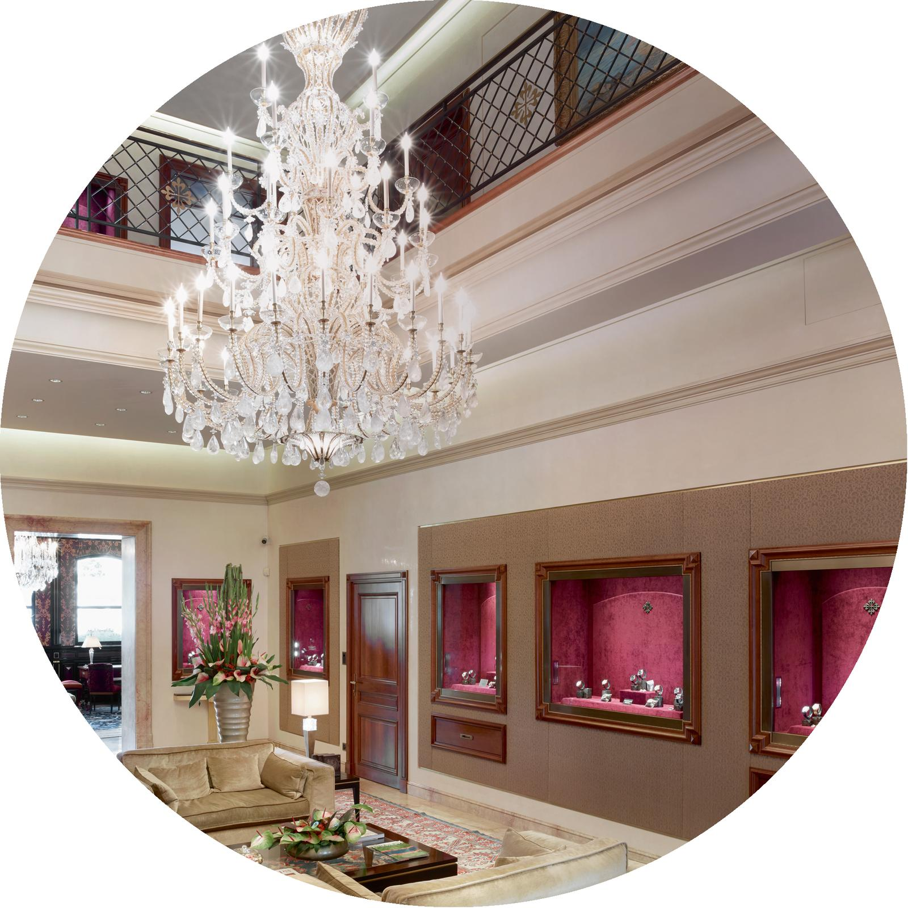

百达翡丽沙龙：日内瓦
日内瓦沙龙或许是同类建筑中的佼佼者。1853年，随着公司规模的不断扩大，百达翡丽需要一个更大的制表场所，于是迁入罗纳大街（rue du Rhône）的一幢两层建筑。公司最初签定了十五年的租约，时至今日已经延续了一百六十余载，这栋建筑也早已成为日内瓦一处标志性城市地标。
日内瓦百达翡丽沙龙由Patrick Cremers先生主管
这座昔日的总部大楼如今完全用于接待百达翡丽的顾客。对于到访这里的顾客来说，这栋称为“沙龙”的重要建筑在某种程度上已经成为他们的精神家园。十九世纪，百达翡丽开始逐层接管整栋建筑，到1891年彻底获得大楼的所有权后，决定对其进行全面翻修。著名建筑师Jacques-Elisée Goss接受百达翡丽的委托，打造出一栋富丽堂皇、古典雅致的崭新建筑。
Goss的设计极大地改善了制表工坊的工作条件：在卫生标准以及为提升工作质量而提供给员工的技术资源方面，当时没有任何一家工坊可与百达翡丽相提并论。Goss的另一项革新创举是在地下室安装集中供暖系统，在为整栋大楼供暖的同时，可以单独调节各个房间的温度，这在当时简直是难以想象的奢侈品。
最近一次翻新改建发生在2004年至2006年期间，是时任总裁菲力•斯登在当时做出的多项重要决定之一。他认为，顾客走进沙龙一楼时，眼前应该呈现这样一幅景观：橱窗内呈现着百达翡丽所有时计系列的全部作品，宛如梦幻。毕竟，多年以来，创作这些滴答前进的微缩机械宇宙所需的一切技能和专业知识均汇聚在楼上的多个房间之中。日内瓦沙龙的整个结构布局浸透着对制表工艺的真挚热爱和渊博学识。

在这座富丽堂皇的钟表沙龙，展厅天花板的高度是普通建筑的两倍，带来心旷神怡的舒适感。墙上覆盖着一层深色木板，营造出舒缓的氛围，正面饰有科尔多瓦皮革。这座历史悠久的沙龙还悬挂着华美璀璨的枝形水晶吊灯，由Baguès公司原创设计并制作。凡尔赛宫和伦敦丽兹酒店均可见到来自这家巴黎著名水晶吊灯公司的作品。Baguès为现代风格的展厅设计了一盏如瀑布般倾泻而下的全新吊灯，将闪烁的光芒洒向带背光照明的雪花石膏墙壁。两座年代久远的蒂芙尼保险箱则为沙龙增添了几分古朴的韵味，它们由百达翡丽在1876年蒂芙尼制表厂搬离日内瓦时购入。